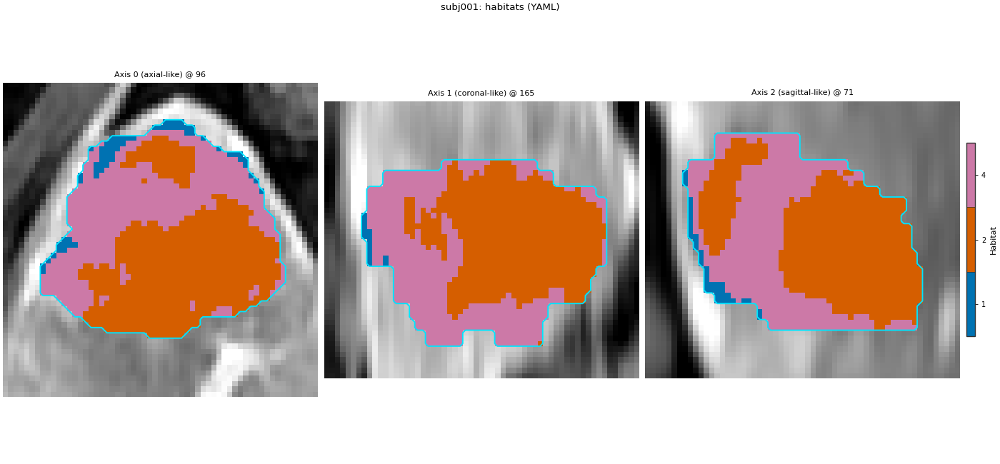
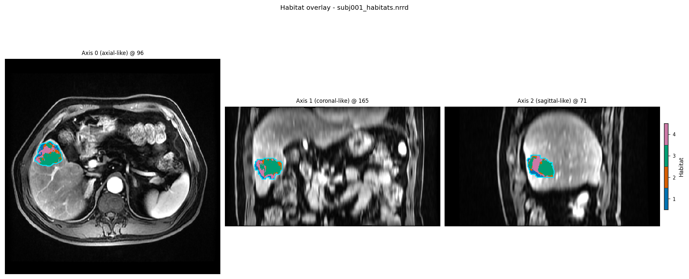

Note
Go to the end to download the full example code.
Quickstart: YAML and CLI#
Background. A YAML file is a plain-text way to write the same stage list
you would build in Python, so an analysis can be run from the shell with the
habit command, shared, and kept next to the results.
Purpose. You get the two-step habitat maps and a volume-fraction / MSI /
ITH / graph table from a YAML file, plus one habitat overlay. The last
section runs the shipped quickstart config with habit get-habitat.
Key terms.
YAML config – a text file whose
spec:block is aHabitatSpec(name,random_seed,stages), and whosedata:/output:blocks say where to read subjects and write results.Stage / Spec / HabitatSpec – see Quickstart: Python API; each YAML stage entry is one
Stage, and itscomponentis theSpec.subject-level / cohort-level preprocessing – a
preprocessentry beforepoolrescales each patient on its own; one afterpoolis learned on the training cohort and saved in the model (Concepts).
The same analysis as Quickstart: Python API, written as a YAML
file: same stages, same seed, fitted on the same four subjects. It gives
the same habitat maps and feature values as the Python page, and as
habit get-habitat with config/habitat/config_habitat_quickstart_v1.yaml
(last section of this page). habit get-habitat --config <file> runs
a file like this from the shell; habit.recipes.run_from_yaml() is the
Python call behind that command. The spec.stages list is the stage
list of the Python page, one entry per stage.
Change DATA to your preprocessed root, SUBJECTS to your subject
folders, and MODALITIES / ROI to your series names. Two details
of the YAML loader:
data.sourceis either a folder (every subject under it) or a manifest YAML that lists subjects and files. The manifest is how the four training subjects are chosen here; the fifth demo subject is the new patient of the Python page.The loader keys the ROI mask by the first modality, so
LAP(the series the tumour was drawn on) is listed first. The Python page listspre_contrastfirst; only the column order differs. Every preprocessing step works column by column, so the habitat maps do not change.
Write the files and run them#
The manifest names the four subjects and their LAP masks; the YAML
document names the stages. save=False keeps the result in memory
instead of writing out_dir.
sphinx_gallery_thumbnail_number = 1
from pathlib import Path
import matplotlib.pyplot as plt
import yaml
import habit.recipes as recipes
from habit.contracts import cohort_from_directory
from habit.datasets import fetch_demo
from habit.viz import plot_habitat_overlay
# Change DATA / SUBJECTS / MODALITIES / ROI to your preprocessed layout.
DATA = Path(fetch_demo()).as_posix()
SUBJECTS = ["subj001", "subj002", "subj003", "subj004"]
MODALITIES = ["LAP", "pre_contrast", "PVP", "delay_3min"] # ROI series first
ROI = "LAP"
Path("out").mkdir(exist_ok=True)
# Manifest: one image folder per subject and modality, one ROI mask folder
# per subject. auto_select_first_file picks the single file in each folder.
manifest_path = Path("out/quickstart_subjects.yaml")
manifest = {
"auto_select_first_file": True,
"images": {s: {m: f"{DATA}/images/{s}/{m}" for m in MODALITIES} for s in SUBJECTS},
"masks": {s: {ROI: f"{DATA}/masks/{s}/{ROI}"} for s in SUBJECTS},
}
manifest_path.write_text(yaml.safe_dump(manifest, sort_keys=False), encoding="utf-8")
yaml_path = Path("out/quickstart.yaml")
yaml_path.write_text(
f"""\
version: '1.0'
workflow: habitat
mode: train
spec:
name: quickstart_two_step
random_seed: 0
stages:
- name: extract
component: {{name: raw, params: {{modalities: [{", ".join(MODALITIES)}], roi: {ROI}}}}}
- name: preprocess
component: {{name: winsorize, params: {{winsor_limits: [0.01, 0.01]}}}}
- name: preprocess2
component: {{name: zscore}}
- name: partition
component: {{name: kmeans, params: {{n_supervoxels: 30}}}}
- name: pool
component: {{name: pool}}
- name: fit
component: {{name: kmeans, params: {{min_habitats: 2, max_habitats: 10, validation: elbow, n_init: 10}}}}
- name: assign
component: {{name: nearest_centroid}}
- name: volume
component: {{name: volume}}
- name: msi
component: {{name: msi}}
- name: ith
component: {{name: ith_score}}
- name: graph
component: {{name: graph, params: {{include_extended_metrics: false}}}}
data:
source: {manifest_path.as_posix()}
output:
out_dir: out/quickstart_yaml
""",
encoding="utf-8",
)
print(yaml_path.read_text(encoding="utf-8"))
# run_from_yaml parses the file into a HabitatSpec plus a cohort and runs
# it -- the same call ``habit get-habitat`` makes.
result = recipes.run_from_yaml(yaml_path, workflow="habitat", save=False)
print(result.habitat_model.summary())
# The same columns the Python page prints; the values match that table.
table = result.features.frame.set_index("subject")
columns = [c for c in table.columns if c.endswith("_volume_fraction")] + ["ith_score", "contrast", "graph_num_nodes_total"]
print(table[columns].round(3).to_string())
# The graph stage adds HABIT's habitat-network features (explained on the
# Python page): one family per habitat (single_h*) and per habitat pair
# (pair_h*_h*).
graph_columns = [c for c in table.columns if c.startswith(("single_h", "pair_h", "graph_"))]
print(len(graph_columns), "graph columns, e.g.", graph_columns[:4])
HABIT demo data (cached)
DATA (preprocessed root): C:\Users\dongm\.habit_data\demo-data-v1\preprocessed
On-disk inventory of this folder:
subjects (5): subj001, subj002, subj003, subj004, subj005
image series: LAP, PVP, delay_3min, pre_contrast
mask keys: LAP, PVP, delay_3min, pre_contrast
example image: images/subj001/delay_3min/WATER__BH_Ax_LAVA_Flex_3min_Series0012.nrrd
example mask: masks/subj001/delay_3min/WATER__BH_Ax_LAVA_Flex_10min_Series0017_mask.nrrd
Your own data must use the same folder tree (change IDs / series names):
DATA/
images/<subject_id>/<modality>/<one image file>
masks/<subject_id>/<roi>/<one mask file>
Then load it with the same call the demos use:
cohort = cohort_from_directory(DATA, modalities=("LAP",), roi="LAP")
Swap DATA / modalities / roi to match your tree. Mask key is often the
same as one image series (here LAP).
version: '1.0'
workflow: habitat
mode: train
spec:
name: quickstart_two_step
random_seed: 0
stages:
- name: extract
component: {name: raw, params: {modalities: [LAP, pre_contrast, PVP, delay_3min], roi: LAP}}
- name: preprocess
component: {name: winsorize, params: {winsor_limits: [0.01, 0.01]}}
- name: preprocess2
component: {name: zscore}
- name: partition
component: {name: kmeans, params: {n_supervoxels: 30}}
- name: pool
component: {name: pool}
- name: fit
component: {name: kmeans, params: {min_habitats: 2, max_habitats: 10, validation: elbow, n_init: 10}}
- name: assign
component: {name: nearest_centroid}
- name: volume
component: {name: volume}
- name: msi
component: {name: msi}
- name: ith
component: {name: ith_score}
- name: graph
component: {name: graph, params: {include_extended_metrics: false}}
data:
source: out/quickstart_subjects.yaml
output:
out_dir: out/quickstart_yaml
Checkpoint fingerprint mismatch under out\quickstart_yaml\.habitat_checkpoint: stored='2efc96a8f587fa8e7eb3ad17ffbebede21694e7c08b55c872d4526f331e91160', current='b81b70fbe479038dc5625c6b8ecc598c7a72a2f54af9d2544ea5d8369dd88fc3'. Cannot resume with strict_checkpoint_hash=True. Incompatible entries remain on disk but are unreachable via fingerprint-scoped cache keys.
Cohort.map[_ComputeUnits]: 0%| | 0/4 [00:00<?, ?it/s]
Cohort.map[_ComputeUnits]: 25%|██▌ | 1/4 [00:03<00:10, 3.64s/it]
Cohort.map[_ComputeUnits]: 50%|█████ | 2/4 [00:05<00:05, 2.68s/it]
Cohort.map[_ComputeUnits]: 75%|███████▌ | 3/4 [00:06<00:02, 2.28s/it]
Cohort.map[_ComputeUnits]: 100%|██████████| 4/4 [00:08<00:00, 2.08s/it]
Cohort.map[_ComputeUnits]: 100%|██████████| 4/4 [00:08<00:00, 2.08s/it]
Cohort.map[_AssignPrecomputedUnits]: 0%| | 0/4 [00:00<?, ?it/s]
Cohort.map[_AssignPrecomputedUnits]: 25%|██▌ | 1/4 [00:00<00:00, 5.68it/s]
Cohort.map[_AssignPrecomputedUnits]: 50%|█████ | 2/4 [00:00<00:00, 5.44it/s]
Cohort.map[_AssignPrecomputedUnits]: 75%|███████▌ | 3/4 [00:00<00:00, 5.44it/s]
Cohort.map[_AssignPrecomputedUnits]: 100%|██████████| 4/4 [00:00<00:00, 5.49it/s]
Cohort.map[_AssignPrecomputedUnits]: 100%|██████████| 4/4 [00:00<00:00, 5.49it/s]
HabitatModel kmeans-b01ecfd00139f26e
habitats : 5
features (4) : LAP, pre_contrast, PVP, delay_3min
defining cohort : n=4
modalities : LAP, pre_contrast, PVP, delay_3min
cohort digest : 81dc6515a9f2b393...
produced by : habitat_model_fitter.kmeans
habit version : 3.0.0
random seed : 0
preprocessing state: inertia, selection_report, validation
habitat_1_volume_fraction habitat_2_volume_fraction habitat_3_volume_fraction habitat_4_volume_fraction habitat_5_volume_fraction ith_score contrast graph_num_nodes_total
subject
subj001 0.090 0.110 0.182 0.182 0.436 0.949 1.424 498.0
subj002 0.000 0.171 0.196 0.117 0.516 0.850 2.295 125.0
subj003 0.000 0.424 0.000 0.576 0.000 0.796 1.639 47.0
subj004 0.178 0.169 0.550 0.000 0.104 0.862 1.461 105.0
608 graph columns, e.g. ['graph_num_habitats', 'graph_num_nodes_total', 'single_h1_n_nodes', 'single_h1_n_edges']
Look at one habitat map#
The anatomy comes from the same folder the YAML named. The saved model
(save=True writes it under out_dir) labels a new patient the
way the Python page shows in its last section.
habitat_map = result.habitat_maps[0]
cohort = cohort_from_directory(DATA, modalities=(ROI,), roi=ROI)
subject = next(s for s in cohort if s.subject_id == habitat_map.subject_id)
fig = plot_habitat_overlay(
subject.image(ROI),
habitat_map,
title=f"{subject.subject_id}: habitats (YAML)",
crop_to="labels",
)
fig.savefig("out/quickstart_yaml_overlay.png", dpi=150, bbox_inches="tight")
plt.show()

F:\work\habit_project\habit\viz\habitat_overlay.py:806: UserWarning: Display geometry conflict: image/anatomy direction does not match mask/label direction. Using the mask/label direction so coronal/sagittal superior-up follows the labelled anatomy. Pass direction= to override.
resolved_direction, resolved_spacing = resolve_display_geometry(
The same analysis from the shell#
No Python needed: pip install habitat-analysis (see
Installation), then in a conda terminal, from a folder
you own:
habit copy-demo-config --dest .
habit fetch-demo --work-dir .
habit check-config --config config/habitat/config_habitat_quickstart_v1.yaml
habit get-habitat --config config/habitat/config_habitat_quickstart_v1.yaml
copy-demo-config writes config/; fetch-demo downloads the
demo pack once (about 473 MB, cached under ~/.habit_data) and links
it as demo_data/preprocessed. config_habitat_quickstart_v1.yaml
holds the stage list above, fitted on subj001 to subj004; it
gives the same habitat maps (voxel by voxel) and the same feature values
as this page and the Python page. The maps, habitat_features.csv
(including the graph columns) and habitat_model.habitatmodel land in
demo_data/results/habitat_quickstart/. Look at one map without
opening a window:
habit view --backend matplotlib demo_data/preprocessed/images/subj001/LAP/WATER__WATER__Ax_Dyn_LAVA_Flex+C_Series0009.nrrd demo_data/results/habitat_quickstart/subj001_habitats.nrrd -o quickstart_cli_view.png --no-open
{kind=link}

subj001 habitats written by habit get-habitat and drawn by the
habit view command above.#
Without --backend matplotlib, habit view opens napari when it is
installed. Every command and option: Command reference; every YAML
field: CLI and YAML.
Where to go next#
The Python page with every result explained, including the habitat graph network: Quickstart: Python API.
Complete analyses, one scenario per page: Building habitat maps.
Total running time of the script: (0 minutes 9.993 seconds)